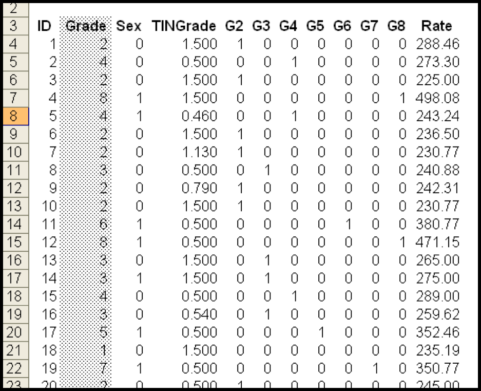

Samuel Burer
Last updated: October 10, 2018
See Excel file soccer_3.xlsx
If you would like to include a categorical variable \(X\) in a regression, and \(X\) takes on \(k\) different values
Then \(X\) must be broken down into \(k-1\) “dummy” variables, each of which corresponds to a single value of \(X\)
A dummy equals 1 when X is that value (0 otherwise)
The value, which does not have a dummy, is the base case; happens when all dummies equal 0
Regression intercept and coefficients must be interpreted with respect to the base case
See Excel file sex_discrimination_1.xlsx
Does it make sense to say, “The pay difference between Grades 1 and 2 is the same as the difference between Grades 7 and 8”? No!
But this is what our current regression says
How do we fix this problem?
Recall: GRADE goes from 1 to 8
Solution is to replace the single ordinal GRADE variable by seven separate categorical variables G2, G3, G4, G5, G6, G7, G8
Note: There is no G1!

Keep in mind…
Breaking GRADE out into G2, …, G7 is used to make our model more accurate
\[ \text{Rate} = 211.5 + 17.8 \cdot \text{Sex} + 8.8 \cdot \text{TINGrade} \] \[ + 19.6 \cdot \text{G2} + 48.9 \cdot \text{G3} + 54.8 \cdot \text{G4} \] \[ + 68.6 \cdot \text{G5} + 118.0 \cdot \text{G6} + 141.9 \cdot \text{G7} + 201.9 \cdot \text{G8} \]
The Simple Linear Model: \(Y = \beta_0 + \beta_1 X_1 + \cdots + \beta_m X_m + \epsilon\)
Ingredients: \(X_i, Y, \beta_i, \beta_0, \epsilon\)
Assumptions
How do we evaluate the quality of the linear equation \(\bar Y = b_0 + b_1 X_1 + \cdots b_m X_m\)?
We compare our model against the simple linear model…
Key Questions:
Ideally, would like to have YES for each question
However, in practice, we simply do our best to build models which have lots of YES’s
More details follow…
See also Excel examples
1. Is each \(\beta_1, \ldots, \beta_m\) significantly different from 0?
Need \(\beta_i \ne 0\) to have a meaningful model, i.e., to say that \(X_i\) is really contributing something to \(Y\)
In the regression output, Excel prints 95% CI for \(\beta_i\)
If 0 is outside the CI, we say “\(\beta_i\) is significantly different from 0 at the 5% level”
Otherwise, \(\beta_i\) may be 0, and \(X_i\) may be insignificant in the regression
Alternative: If p-value < 0.05, then conclude \(\beta_i \neq 0\)
2. Are the residuals/errors independent of the \(X_i\)’s?
For example, do they appear randomly dispersed?
In Excel, examine a scatter plot of the residuals against the predicted values
Rule of thumb: “strip of random points”
3. Are the residuals normally distributed?
Must examine a histogram of the residuals
Excel: use pivot table/chart to create histogram of residuals
4. Does each \(b_1 , \ldots, b_m\) make sense? Does \(b_0\) make sense?
In many situations, you will already have an idea of reasonable values for the slope and intercept
The values of \(b_i\) and \(b_0\) should more or less match your knowledge of the situation
Regarding \(b_0\):
5. Is \(S_{XY}\) relatively small (i.e., close to 0)?
6. Is Adjusted \(R^2\) relatively large (i.e., close to 100%)?
No rule of thumb about how big adjusted \(R^2\) should be, but the closer to 1 the better
Some applications have certain expectations
If good, then use the fitted model to explain or forecast
If bad, then “back to the drawing board”
See Excel files soccer_3.xlsx and cpi_2.xlsx
“Unusual or excessive frugality; extreme economy or stinginess.”
“Adoption of the simplest assumption in the formulation of a theory or in the interpretation of data, especially in accordance with the rule of Ockham’s razor.”
In other words, keep it as simple as possible
Remove insignificant variables in the regression
Specify relevant independent variables, including dummy variables for categorical variables
Construct a model with all independent variables
Check for significance of the independent variables by examining the p-values
If some p-values are above 0.05, remove the one with the highest p-value, and re-run the regression. Go to Step 3.
If all p-values are below 0.05, then evaluate fit by answering key questions
See Excel file civics_3.xlsx